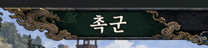
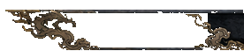
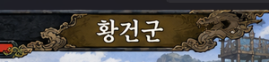
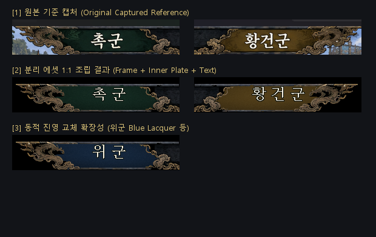

기존 원본 전투 화면의 어두운 금속 질감·색감 100% 보존 / 텍스트 제외 / 단일 공통 프레임 수평 반전 재사용

원본 캡처: 글자 "촉군"이 그림에 일체형으로 각인되어 교체 불가 상태

조립 결과: 녹색 배경판 + 텍스트 없는 공통 프레임 + HTML/CSS 텍스트 렌더링

원본 캡처: 우측 황토색 현판 ("황건군" 텍스트 포함)
조립 결과: 황토색 배경판 + 수평 반전된 동일 프레임 + 코드 텍스트 렌더링
